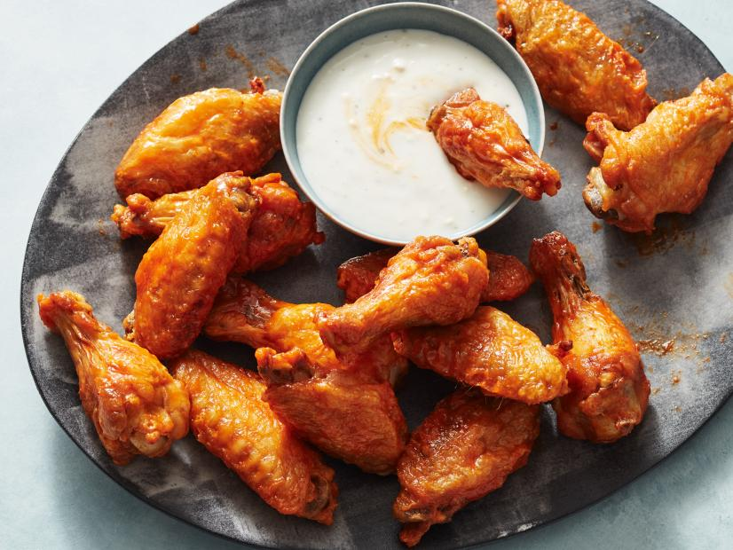

Kyle's World Famous Air Fryer Buffalo Wings

Description:
Cooking wings in the air fryer is the best way to get them extremely crispy while keeping them relatively healthy.
The secret to getting these wings extremely crispy is to brine them for a couple hours in the refrigerator with salt,
baking soda and cornstarch. This will help draw our excess moisture and get them extremely crispy while air frying.
Ingredients:
- 2-3lbs of Whole Wings
- 1/2 Cup Unsalted Butter
- 1 Cup Franks Red Hot Sauce
- 1 Teaspoon Salt
- 1/2 Teaspoon Baking Soda
- 1/2 Teaspoon Cornstarch
Steps:
- First, prep your wings by patting them dry and cutting them into drums and flats
(If this if your first time, check out this article here on how to cut wings
How to cut wings)
- Add your wings to a large bowl and add your salt, baking soda, and cornstarch
- Mix well and let this sit in the refrigerator for at least a couple hours (preferably 8 hours)
- Once you lose patience, take your wings and place them in the air fryer skin side down
- Set your air fryer to 400 degrees fahrenheit for 20 minutes
- Make sure to flip them half way through (10 minutes)
- When the wings are almost done, grad a small sauce pan and add your butter and Franks Red Hot sauce
- Combine the butter and sauce on medium low heat until completely mixed together
- Once the wings are done and crispy, add them to a large bowl and toss them in your homemade buffalo sauce
- Enjoy with carrots, celery, and ranch
Return Home